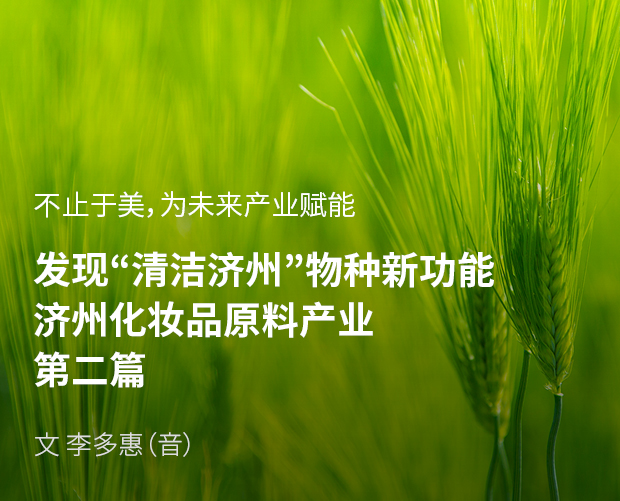
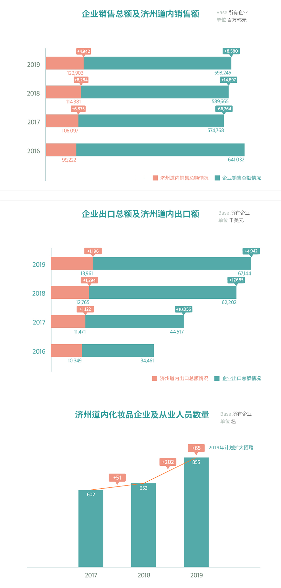
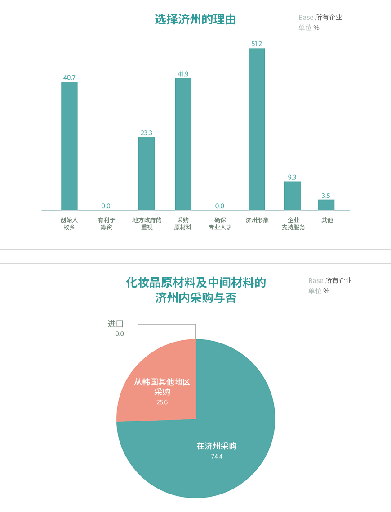

기획취재콘텐츠
- Home
- 제주라이프
- 기획취재콘텐츠
济州化妆品原料产业 第二篇새로운 글

济州化妆品产业的发展
据《2018年济州地区化妆品产业现状调查报告》，济州道的化妆品企业约有100多家，其中80%企业的总部位于济州道。济州道化妆品企业的销售额和出口额持续增长，尤其是出口额涨势明显。产业规模扩大，化妆品产业从业人员数量也不断增多。2017年至2019年济州道化妆品企业的员工总数分别为602人、653人和855人，2019年则同比增长30%以上。


企业销售总额及济州道内销售额 (base:所有企业, 单位: 百万韩元)
| 分类 | 济州道内销售总额情况 | 企业销售总额情况 |
|---|---|---|
| 2019年 | 122,903(+4,942) | 598,245(+8,580) |
| 2018年 | 114,381(+8,284) | 589,665(+14,897) |
| 2017年 | 106,097(+6,875) | 574,768(-66,264) |
| 2016年 | 99,222 | 641,032 |
企业出口总额及济州道内出口额 (base:所有企业, 单位: 千美元)
| 分类 | 济州道内出口总额情况 | 企业出口总额情况 |
|---|---|---|
| 2019年 | 13,961(+1,196) | 67,144(+4,942) |
| 2018年 | 12,765(+1,294) | 63,202(+17,685) |
| 2017年 | 11,471(+1,122) | 44,517(+10,056) |
| 2016年 | 10,349 | 34,461 |
济州道内化妆品企业及从业人员数量(base:所有企业, 单位:名)
2017年 602名, 2018年 653名(+51名), 2019年 855名(+202名), 2019年计划扩大招聘(+65名)

据济州科技园推测，化妆品产业市场将与原料市场实现同步增长。一项关于“是否在济州采购化妆品原材料和中间材料”的调查结果显示，在济州采购材料的比例达74.4%，说明济州的原料得到广泛应用，而不是空有“清洁济州”这一形象。而针对“为何在济州设立总部或分公司并以济州道为业务大本营“的提问（多选题），表示“希望通过化妆品品牌与济州形象产生协同效应”的回答占比最高（51.2%），其次是有利于采购原材料（41.9%）。

选择济州的理由 (base:所有企业, 单位:%)
- 创始人故乡 40.7%
- 有利于筹资 0%
- 地方政府的重视 23.3%
- 采购原材料 41.9%
- 确保专业人才 0%
- 济州形象 51.2%
- 企业支持服务 9.3%
- 其他 3.5%
化妆品原材料及中间材料的济州内采购与否 (base:所有企业, 单位 %)
在济州采购 74.4%, 从韩国其他地区采购 25.6%, 进口 0%

通过在化妆品产业中巩固自身的清洁形象，提供各种高功能清洁原料，济州的化妆品原料产业和化妆品产业拥有无限潜力。有关人士表示：化妆品产业是一种高附加值产业，在追求形象和实现品牌价值的基础上谋求价值最大化；化妆品产业中的化妆品原料产业属于技术密集型产业，如果率先围绕丰富物种展开研发，就能成为食品和化妆品原料技术领先地区，创造出更大的附价值。
着力发展济州化妆品原料与化妆品产业
济州特别自治道一直致力于将健康与美容生物产业（化妆品、食品、海洋生物等）培育成地区战略产业。济州科技园对济州生物产业发展起到引领带动作用，正在助力培育健康与美容生物产业，落实生物科学园建设项目等。济州于2004年设立韩国第一家非首都圈化妆品工厂，次年12月通过CGMP认证（cosmetic GMP），帮助济州本土化妆品企业生产了300多万支化妆品，如基础化妆品、功能性化妆品、面膜、洗发水等。
2007年6月济州科技园建成并运营化妆品生产工厂，2019年11月为构建清洁资源化妆品原料与产业化基础、培育化妆品原料产业，而正式组建“化妆品原料产业化协议体”。该协议体由全国化妆品及其原料相关企业、大学、研究机构、公共机构等共同组成，负责为化妆品原料开发和产业化提供支持，如为开发济州原料产品而提供材料信息和产品化咨询服务、提供济州化妆品原料认证咨询服务、培养专业人才和推动技术信息交流、扶持化妆品原料生产等。
此外，还建立了济州化妆品认证制度（JCC, Jeju Cosmetic Cert），以扩大济州本土化妆品原料的应用范围，提升济州本土化妆品的品牌形象。济州化妆品认证是一项公认认证制度，由济州道知事亲自证明产品产自济州岛且内含5~10%以上济州本土化妆品原料。目前已有32家企业的150多款产品通过了济州化妆品认证，其中包括悦诗风吟和LG生活健康等大企业的产品，以及将总部设于济州道的中小企业品牌产品。
化妆品原料产业一跃成为济州未来支柱产业
化妆品原料产业正在成为济州的未来支柱产业。依托化妆品原料研发与实证项目，济州谋求成为化妆品原料产业和生物产业的领先地区，而且还能对接济州代表性产业——旅游产业。悦诗风吟曾将化妆品品牌与当地内容相结合，为当地旅游产业发展做出了贡献。西广茶园与雪绿茶博物馆被誉为济州的必去景点。以济州原料和济州形象诠释品牌的化妆品系列大获成功，与K-美妆的人气相辅相成，吸引了海外游客的关注，让济州成为了备受瞩目的K-美妆旅游胜地。与此同时，济州的美丽村庄和岛屿也重获新生，如山茶花村、榧子村、山茶花山、加波岛等。
“依托济州优质化妆品原料受到的关注和韩国化妆品品牌在海外市场上的人气，吸引了中国等地的海外OEM厂商来济州考察本土原料，逐渐增强了原料产业的影响力。如果提升生物技术实力，发挥物种多样性优势，将化妆品原料发展成技术密集型产业，其潜力将十分巨大。”（济州科技园化妆品产业组长金峰硕（音））
济州到处都是未被发现的清洁原料。海陆物种丰富多样，济州特有物种依托地形特点繁衍生息，今后还将有物种被不断发现和研究。这将让化妆品原料产业成为济州备受瞩目的未来支柱产业。
이전글